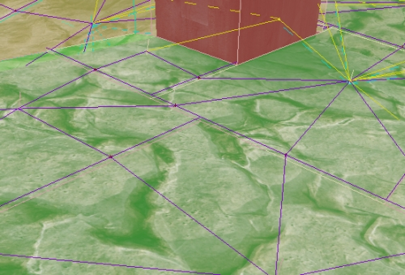
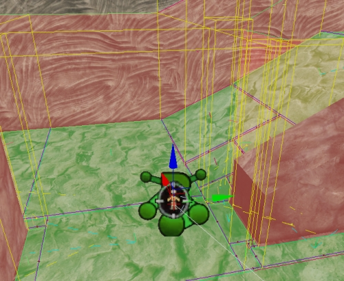
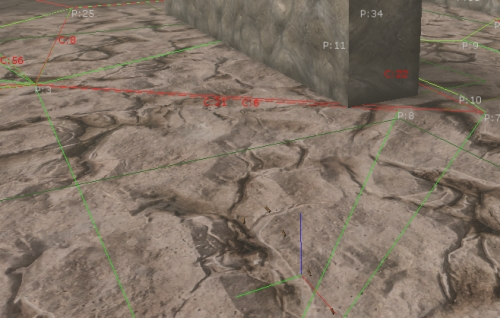
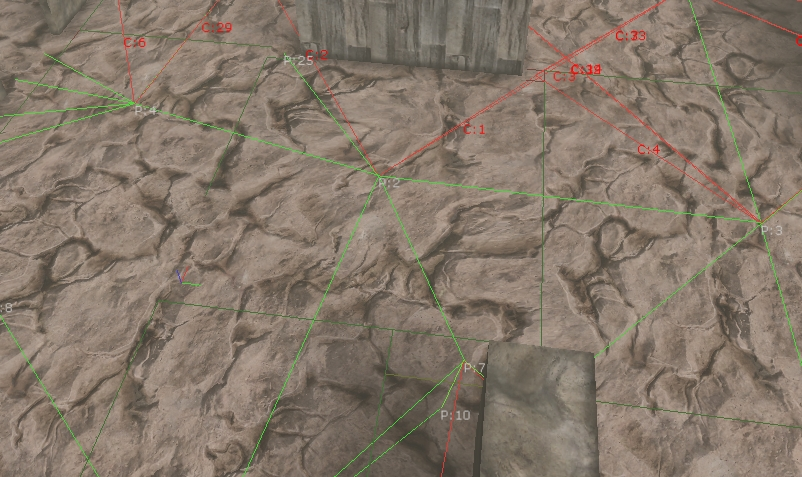

UDN
Search public documentation:
NavigationMeshPathDebugging
日本語訳
中国翻译
한국어
Interested in the Unreal Engine?
Visit the Unreal Technology site.
Looking for jobs and company info?
Check out the Epic games site.
Questions about support via UDN?
Contact the UDN Staff
中国翻译
한국어
Interested in the Unreal Engine?
Visit the Unreal Technology site.
Looking for jobs and company info?
Check out the Epic games site.
Questions about support via UDN?
Contact the UDN Staff
UE3 Home > AI & Navigation > Navigation Mesh Path Debugging
Navigation Mesh Path Debugging
Overview
Path debug rendering
- Red surfaces indicate obstacle mesh surfaces ( surfaces the AI cannot walk through )
- Green surfaces are walkable surfaces (part of the navmesh itself)
- Purple lines along boundaries between polygons indicate connection between polygons. If there is no purple line along two adjacent polygons AIs cannot get from one to the other
- Other lines (e.g. dashed yellow lines) come from different edge types. In this case the dashed yellow indicates a coverslip edge
- bDrawEdgePolys - when TRUE a line will be drawn from the center of the edge, to the center of both polygons linked by that edge. This is useful in debugging what polygons are actually being linked by what edges. Here is a screenshot with this turned on:
 - bDrawPolyBounds - when TRUE a yellow wire box will be drawn indicating the calculated bounds of each polygon Screenshot:

bDebugConstraintsAndGoalEvals
[0515.02]Log: ------- PATH CONSTRAINT STATS -------- [0515.02]Log: Processed: 43 ThrownOut: 0 (0.00% thrown out) AddedPathCost: 0.00 (0.00% total) AddedHeuristic: 0.00 (0.00% total) - (NavMeshPath_MinDistBetweenSpecsOfType_0) [0515.02]Log: Processed: 43 ThrownOut: 0 (0.00% thrown out) AddedPathCost: 0.00 (0.00% total) AddedHeuristic: 175.00 (100.00% total) - (NavMeshPath_Toward_0) [0515.02]Log: -------------------------------------- [0515.02]Log: TotalThrownOut: 0 TotalAddedDirectCost: 0.00 TotalAddedHeuristicCost: 175.00 [0515.02]Log: ------- GOAL EVALUATOR STATS -------- [0515.02]Log: Threw Out 10 (out of 11 processed (90.91%)) (Responsible for 100.00% of all nodes thrown out) - NavMeshGoal_At_0 [0515.02]Log: ---------------------------------------From this output you can get a lot of information. For example if I had a malfunctioning constraint in the path constraint list that was throwing all nodes out, I could see that it was misbehaving by inspecting the statistics. This will also print out information about what constraints are adding cost, so you can see which constraints are having the biggest effect on the path search, etc..
bUltraVerbosePathDebugging

- Red lines - indicate an attempted pathstep which was denied
- Red Text - Is a key to a log output line corresponding to that failed traversal. For example if you see C:21 on an edge you want to know why the AI couldn't path through, search for C:21 in your log window and you will find your reason. An example log line: [0061.15]Log: PATH_DEBUG_MESSAGE[C:21]: Edge does not support this entity (supports returned FALSE) Edge: FNavMeshEdgeBase (Len:30.00 EffecLen:30.00)
- Green lines - indicate a successful traversal from one poly to another
- White Text - Is a key to a log output line corresponding to a failed (non terminating) call to EvaluateGoal. An Example log line: [0061.15]Log: Poly (P:16) (polyctr:X=13905.000 Y=-13110.000 Z=129.000) was just given status [EvaluateGoal returned 0] by NavMeshGoal_At_0
- DebugCoordinateSystem - is drawn at the SearchStart
[0132.83]Log: PATH_DEBUG_MESSAGE[C:22]: Edge does not support this entity (supports returned FALSE) Edge: FNavMeshCoverSlipEdge (Actor: CoverLink_8 RelItem: 0 MoveDir: -1)Here is another screenshot demonstrating a wider view of the debug mode in action:  Lots of other pertinent info is also printed to the log in this mode, for example working set size at each path step, and reason for path search termination. Here is some example output:
[0132.82]Log: Poly (P:108) (polyctr:X=12828.750 Y=-15367.500 Z=-127.000) was just given status [EvaluateGoal returned 0] by NavMeshGoal_SquadFormation_0 [0132.82]Log: PATH_DEBUG_MESSAGE[C:221]: Path constraint NavMeshPath_WithinTraversalDist_0 EvaluatePath rejected this edge! Edge: FNavMeshEdgeBase (Len:60.00 EffecLen:90.00) [0132.82]Log: PATH_DEBUG_MESSAGE[C:222]: Edge does not support this entity (supports returned FALSE) Edge: FNavMeshEdgeBase (Len:15.00 EffecLen:30.00) [0132.82]Log: PATH_DEBUG_MESSAGE[C:223]: Edge does not support this entity (supports returned FALSE) Edge: FNavMeshEdgeBase (Len:15.00 EffecLen:30.00) [0132.82]Log: +++Finished path step 108!, Openlist now has 2 nodes in it. [0132.82]Log: Poly (P:109) (polyctr:X=12105.000 Y=-13860.000 Z=127.750) was just given status [EvaluateGoal returned 0] by NavMeshGoal_SquadFormation_0 [0132.82]Log: PATH_DEBUG_MESSAGE[C:224]: Path constraint NavMeshPath_WithinTraversalDist_0 EvaluatePath rejected this edge! Edge: FNavMeshEdgeBase (Len:60.00 EffecLen:90.00) [0132.82]Log: PATH_DEBUG_MESSAGE[C:225]: Edge does not support this entity (supports returned FALSE) Edge: FNavMeshEdgeBase (Len:15.00 EffecLen:30.00) [0132.82]Log: +++Finished path step 109!, Openlist now has 1 nodes in it. [0132.82]Log: Poly (P:110) (polyctr:X=13800.000 Y=-14482.500 Z=-127.000) was just given status [EvaluateGoal returned 0] by NavMeshGoal_SquadFormation_0 [0132.82]Log: PATH_DEBUG_MESSAGE[C:226]: Path constraint NavMeshPath_WithinTraversalDist_0 EvaluatePath rejected this edge! Edge: FNavMeshEdgeBase (Len:60.00 EffecLen:120.00) [0132.83]Log: PATH_DEBUG_MESSAGE[C:227]: Edge does not support this entity (supports returned FALSE) Edge: FNavMeshEdgeBase (Len:15.00 EffecLen:30.00) [0132.83]Log: PATH_DEBUG_MESSAGE[C:228]: Path constraint NavMeshPath_WithinTraversalDist_0 EvaluatePath rejected this edge! Edge: FNavMeshEdgeBase (Len:60.00 EffecLen:120.00) [0132.83]Log: PATH_DEBUG_MESSAGE[C:229]: Path constraint NavMeshPath_WithinTraversalDist_0 EvaluatePath rejected this edge! Edge: FNavMeshEdgeBase (Len:75.00 EffecLen:105.00) [0132.83]Log: PATH_DEBUG_MESSAGE[C:230]: Edge does not support this entity (supports returned FALSE) Edge: FNavMeshCoverSlipEdge (Actor: CoverLink_48 RelItem: 0 MoveDir: -1) [0132.83]Log: +++Finished path step 110!, Openlist now has 0 nodes in it. [0132.83]Log: +++++++++ STOPPING PATH SEARCH -- Nodes on openlist: 0 Reason: Path finished, and DetermineFinalGoal returned TRUE.. search was a success!Also, a quick tool to easily enable this debug mode on a specific AI in game at runtime has been built. VerbosePathDebug is a console command you can run which will trace out from where the player is looking, and set bUltraVerbosePathDebugging to true for any pawns in the path. When this bool is on for an AI, and that AI completes a pathfind, previous ultraverbose debug info will be flushed, to make way for the new and the game will be put in playersonly mode to give you a chance to digest the info. Keep in mind that if multiple pathfinds happen in one frame whichever one happens last will be the one you see drawn on screen.